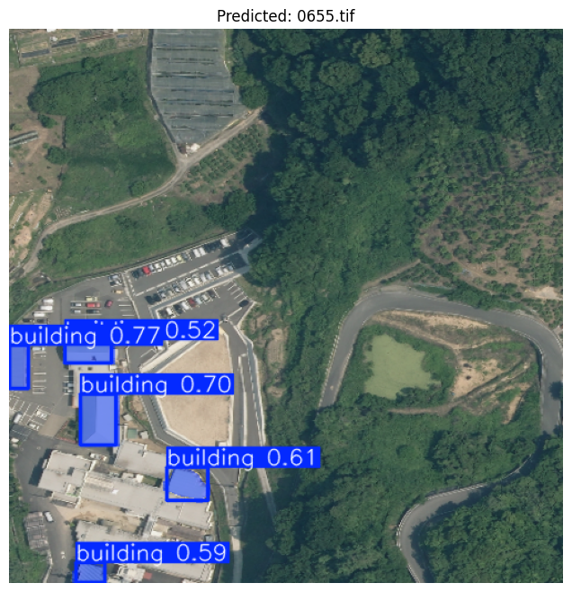

IEEE BigData Cup Building Extraction
Building Footprint Extraction using YOLOv8
Computer Vision · Instance Segmentation · Geospatial AI
This project focuses on extracting building footprints from aerial imagery for the IEEE BigData Cup 2024. The objective was to generate a single submission file where each image is matched with the polygons of every detected building, so the output captures not just location but also the building's shape.
Problem & Goal
Each prediction had to follow the competition format:
- ImageID - the identifier of the test image
- Coordinates - a stringified list of polygon points representing the detected buildings
That makes this a combined object detection + instance segmentation task. Detecting a building with a box was not enough; the model needed to trace each footprint accurately enough to create usable polygons.
Model Choice & Justification
I selected YOLOv8n-Seg from Ultralytics because it gave the best balance between segmentation quality and hardware constraints.
- Direct polygon-friendly output - the segmentation head produces masks that align naturally with polygon extraction.
- Modern and efficient - it is fast to train and run, while still giving reliable results for a single-class task.
- Built-in evaluation metrics - precision, recall, and mAP were available directly during training.
- Practical setup - compared with alternatives like Detectron2, the dependency setup was much lighter.
I also tested a plain YOLOv8n detection model, but box-only predictions were not precise enough for footprint extraction. Segmentation produced much better building outlines.
I deliberately stayed with the nano segmentation variant because I trained locally on a GPU with 4 GB of VRAM. Larger or newer variants were less realistic for that environment.
Assumptions Behind the Approach
- Single class problem - the dataset only contains buildings, which is well suited to YOLOv8.
- Useful segmentation annotations - JSON labels included both bounding boxes and segments, making a segmentation model practical.
- Reasonable training coverage - the train/validation split was strong enough to learn building shapes from aerial views.
Evaluation Strategy
I tracked both optimization signals and final detection quality:
- Training and validation losses -
box_loss,seg_loss, anddfl_loss - Precision / Recall / mAP - especially
mAP50andmAP50-95 - Confusion matrix - to inspect false positives and false negatives
The main interpretation was simple but useful: if training and validation losses both decrease steadily and remain close, the model is learning without severe overfitting. That is the behavior I observed here.
Results
The final Kaggle submission scored approximately 0.5. Even though that leaderboard score was lower than I wanted, the training metrics showed a model that was learning solid footprint representations and maintaining a good precision/recall trade-off.

| Metric | Value | Interpretation |
|---|---|---|
| Precision (B) | 0.80102 | The model correctly identified most predicted buildings. |
| Recall (B) | 0.71129 | It retrieved a strong share of the buildings present in ground truth. |
| mAP50 (B) | 0.80063 | Strong overlap quality at the 50 percent IoU threshold. |
| mAP50-95 (B) | 0.54301 | Reasonably consistent performance across stricter IoU thresholds. |
Taken together, the curves and summary metrics suggested good generalization rather than a model that was simply memorizing the training set.
Limitations & Next Steps
The main gap was the difference between promising validation metrics and the more modest Kaggle score. Likely reasons include distribution mismatch between local validation and the final test set, as well as limited training time and compute.
- Train longer and test whether performance improves past the plateau after additional tuning.
- Try a larger segmentation model such as YOLOv8m-Seg if more VRAM is available.
- Add more diverse geospatial data or augmentations to improve generalization.
- Tune learning rate, batch size, confidence thresholds, and IoU thresholds more aggressively.
Conclusion
Overall, YOLOv8n-Seg was a practical and reliable choice for this building extraction task. It delivered accurate enough masks to make polygon-based submission feasible, while staying within the compute budget of a local setup. The project was a good example of balancing model quality, resource limits, and competition constraints in a real computer vision workflow.
Resources
The project code, notebooks, and competition context are available online. This page gives a concise summary, while the repository and Kaggle page provide the implementation and challenge background.
Project Information
- Category Deep Machine Learning
- Focus Computer Vision, Instance Segmentation
- Framework YOLOv8n-Seg (Ultralytics)
- Competition IEEE BigData Cup 2024
- Compute Local GPU, 4 GB VRAM
- Repository Public GitHub repository
- View on GitHub
- View Kaggle Competition